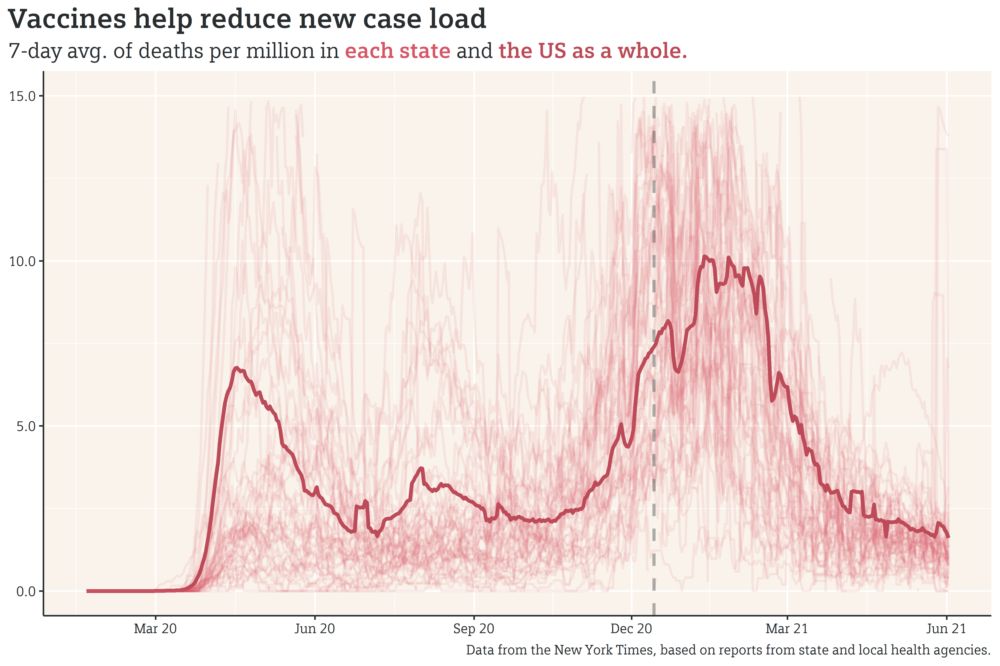

{kind=link}

As vaccines have become widely available in the US, new COVID cases and deaths have dropped significantly from winter peak, with the 7-day average for both cases and deaths nearing the averages reported during the initial lockdown in the summer of last year (note that, in the chart for the 7-day average of deaths below, the scale is restricted to 15 deaths per million; this cuts off some of the state surges, but shows the US average better than a chart with an unedited scale).

According to the US Vaccine Tracker, 41% of Americans are fully vaccinated as of today. Even more heartening is the fact that the partisan divide regarding vaccine hesitancy, while still existent, is shrinking.
While this is certainly good news about the country as a whole, individual states, counties, and cities may have varying levels of success in curbing the spread of the virus in the local community. The New York Times created a helpful dashboard that lets you look at the spread of the virus on a state, county, or metro area scale.
All this is to say that, while the pandemic is still not (and possibly will never be) a thing of the past, the introduction of vaccines certainly has appeared to help curb the spread.
It’s been a while since I’ve written, due to a flurry of weddings and trips. While I had originally hoped to get back onto a regular weekly writing schedule, I will again have to push out the next post until late June, due to some exciting personal news: June 21st, I’ll be starting a new job! I’ll be transitioning from engineering in the oil & gas industry to healthcare analytics, which I’m really excited about! In the meantime, however, there’s a flurry of work to do in my current job to ensure that the person backfilling me is prepared to pick up the projects I’m working on. Hopefully after that, I can get back to a regular schedule.
As always, you can find my work on github.